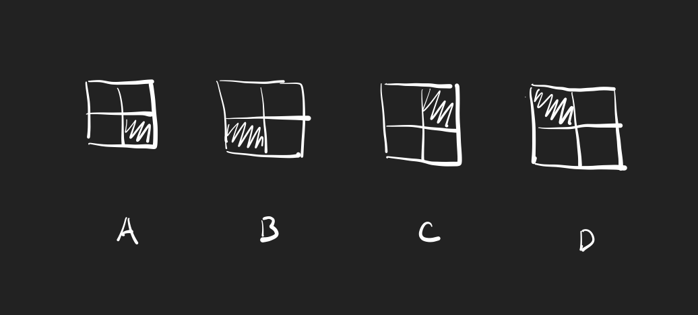
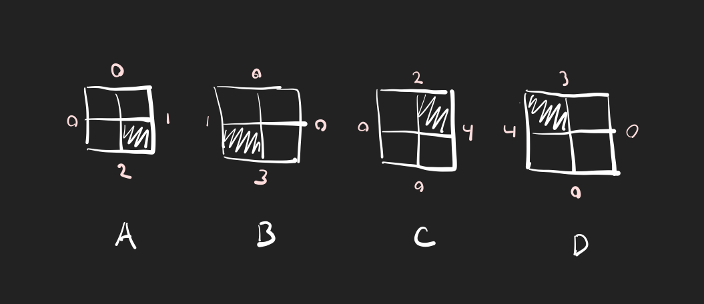
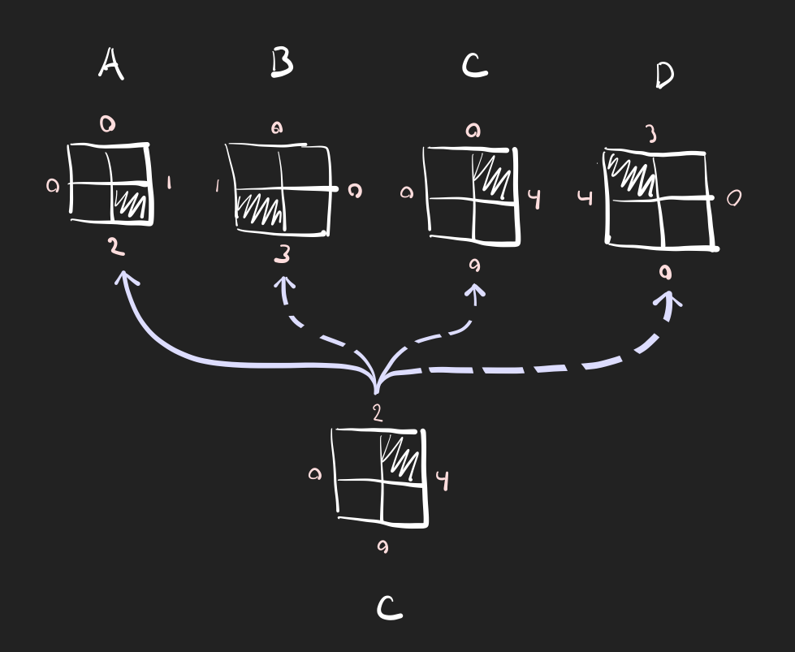
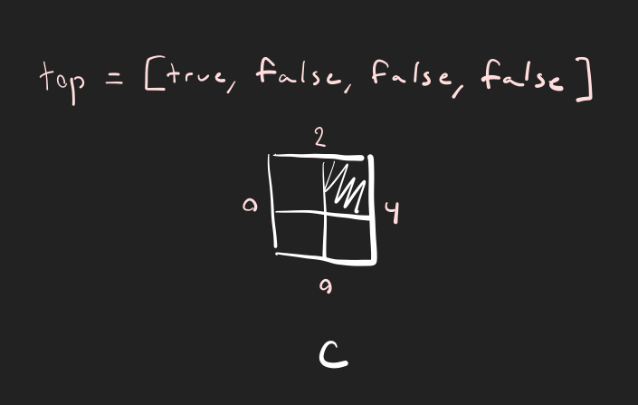

The WFC Propagator Constructor
The propagator (and the constructor system) is probably the most often misunderstood part of the wfc algorithm. The basic idea is that it's a way to easily access the adjacency data generated in the tile generation stage. The propagator constructor generates four lists of booleans (one list for each side of the tile) for every tile, where each boolean corresponds to whether or not a tile can go in the adjacent location which the list is describing. Now that's a lot of words, so let's see how it looks.
Lets just focus on a simple example. Here are our tiles
and here are the tiles with color data, where each number corresponds to a unique arrangement of colors
Now let's just focus on tile C. What we now need to figure out is what tiles can go above tile C, which we do by comparing the top color value of tile C with the bottom color values of all of the tiles (including C itself)
This check finds that the only tile which fits above tile C is tile A, and so the boolean at the index of tile A is set to true for tile C's "top" adjacency index, and all the others are set to false.
We do this for all of the tiles and all of their edges, and at the end we'll have an array where each primary index corresponds to the tile you're checking, which has top, bottom, left, and right arrays where each value in those array corresponds to whether or not a given tile can go in that location.

For example, if we wanted to see if tile B could go above tile A we would get the value of "adjacencyIndex[A.index].top[B.index]", where adjacencyIndex is the primary table of adjacency data. In plain English this would be something like "get the value at tile B above tile A". While it might still be a bit confusing, this data structure is super useful because it allows us to quickly see if a tiles can be adjacent just by plugging in indices. You could ignore this step, but you would then have to have to perform the tests we did here every time you wanted to check the adjacency of two tiles (which would be super slow and unnecessary)
Now I promised some actual code, so here you go!
for i = 1, #wfc.tiles do -- go through all tiles
local currentTile = wfc.tiles[i] -- get current tile
local tileAdjacency = {} -- make a new adjacency table
tileAdjacency.top = {} -- list of possible tiles above
for j = 1, #wfc.tiles do -- check other tiles
local checkTile = wfc.tiles[j]
if checkTile.color.bottom == currentTile.color.top then
tileAdjacency.top[j] = true
else tileAdjacency.top[j] = false end
end
... -- bottom, left, and right adjacencies go here, but it's a bit redundant
table.insert(wfc.adjacencyIndex, tileAdjacency)
end
Let's break that up, shall we?
First of all, we're going through the list of tiles we made in the tile generation phase (see this article for a description of how that works)
for i = 1, #wfc.tiles do
Then, we set a local variable to the tile we're checking, and make a new "tileAdjacency" table which will store the top, bottom, left, and right adjacency information
local currentTile = wfc.tiles[i]
local tileAdjacency = {}
We add a table called "top" to the "tileAdjacency" table, which will store the top adjacency data, and then start to loop through the list of tiles again
tileAdjacency.top = {}
for j = 1, #wfc.tiles do
Now we create a local "checkTile" variable to store the tile we're looking at, and check if the color data of the bottom of that tile is the same as the color data of the top of our current tile
local checkTile = wfc.tiles[j] if checkTile.color.bottom == currentTile.color.top then
If it is, then we know that it can go above the current tile. To save that, we set the "top" tile adjacency at the index of that tile to true
tileAdjacency.top[j] = true
But if the colors aren't the same, then we set the "top" tile adjacency to false
else tileAdjacency.top[j] = false end
With the "top" tile adjacency constructed we move onto the bottom, left, and right adjacencies (which I'll skip over because they're the same as the top one), and then we can finally add all of those in the form of the tileAdjacency variable to the overall adjacencyIndex table.
table.insert(wfc.adjacencyIndex, tileAdjacency)
And with that we're done! Hopefully this helped to explain how the propagator constructor works, as well as what the structure of the adjacencyIndex looks like.